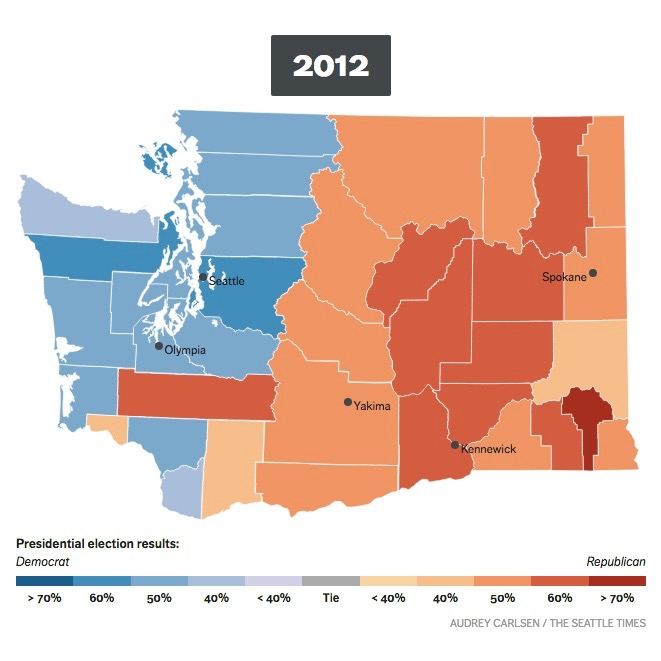
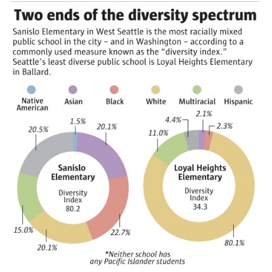
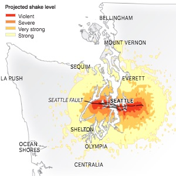
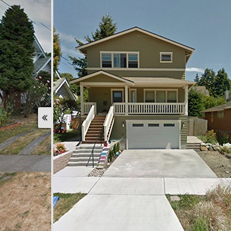
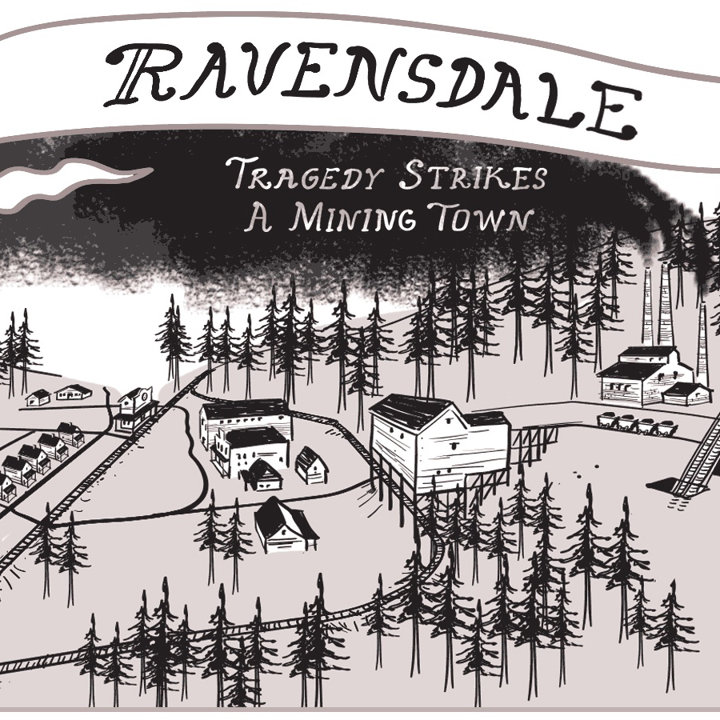
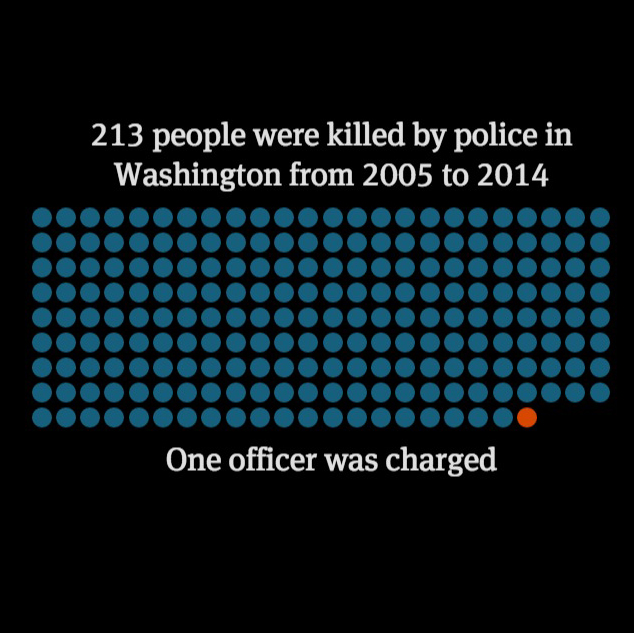
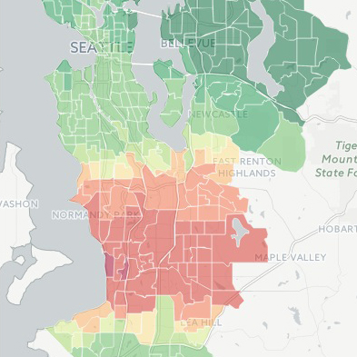
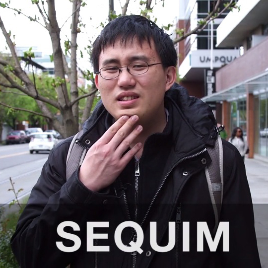
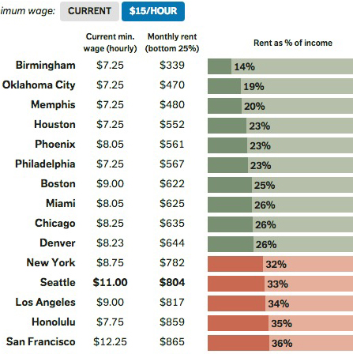
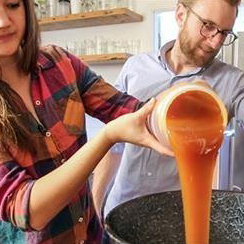
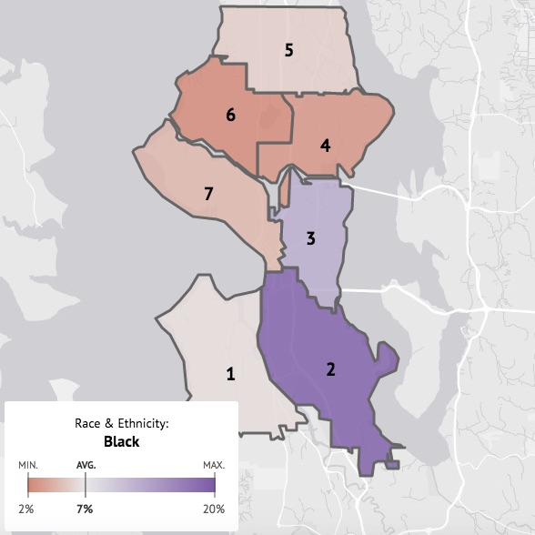
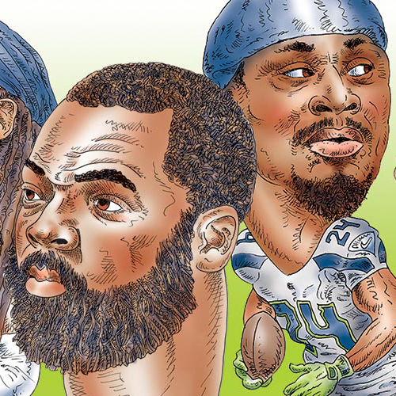
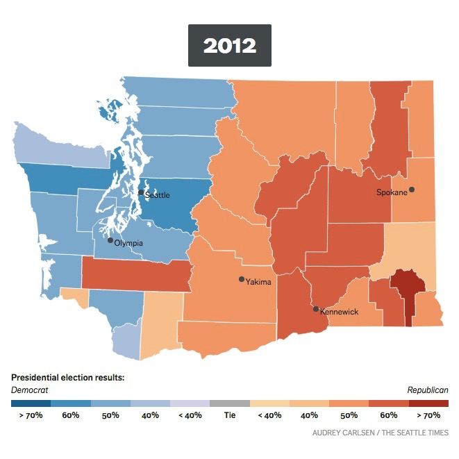
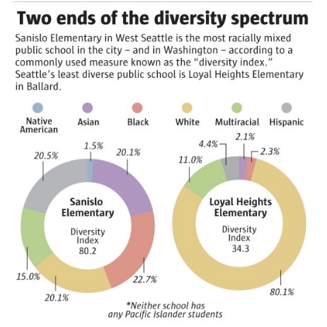
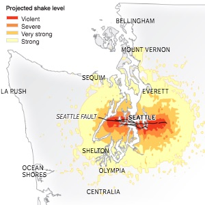
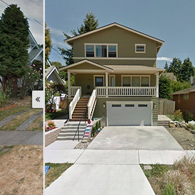
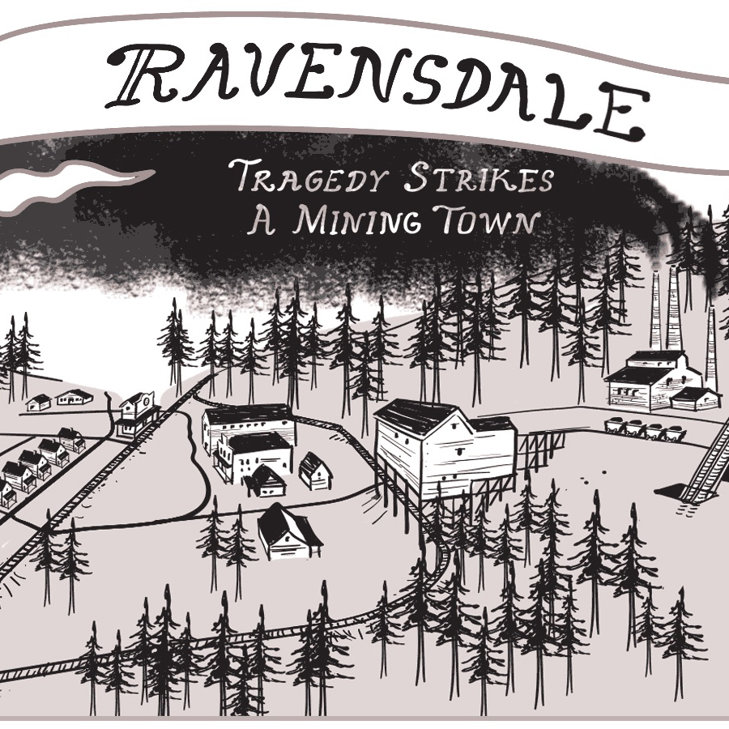
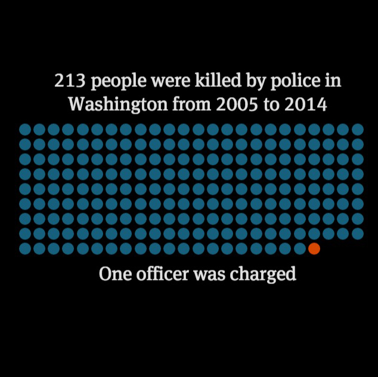
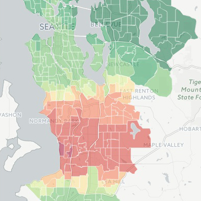
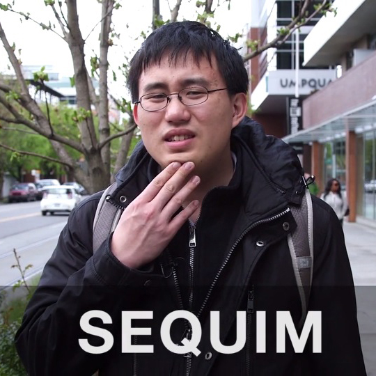
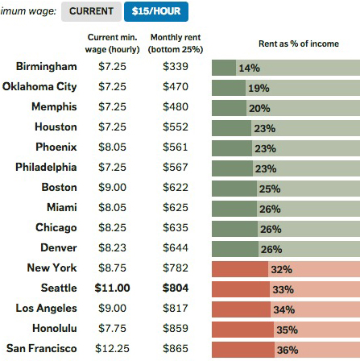
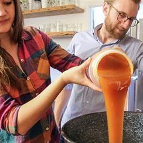
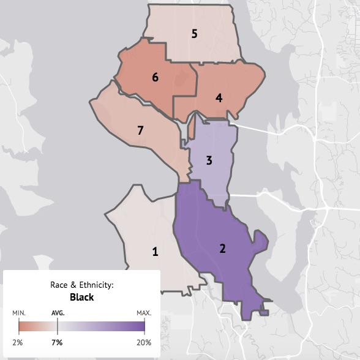
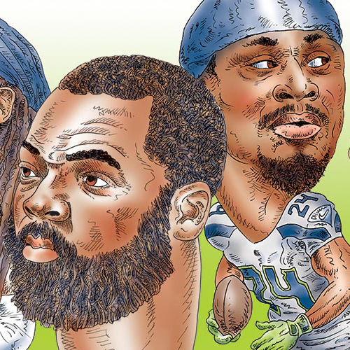
Several lifetimes ago, Audrey left medical school and stumbled into journalism. She has reported for NPR's Science Desk and Alaska Public Media, and most recently spent two years building interactive projects and heading up a grassroots diversity initiative at The Seattle Times. She now works as a graphics editor at The New York Times, often focusing on issues of race and politics.
Colleagues have described Audrey as "a little bit crazy" and "not entirely hopeless."
She is currently based in New York City and hopes to one day live in a very small house with a very large bathtub.
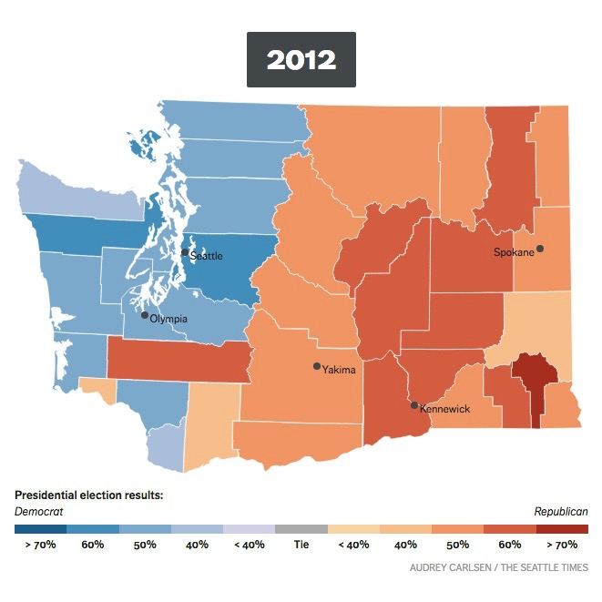
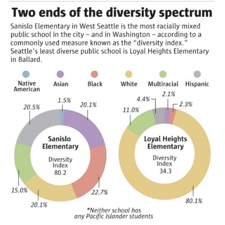
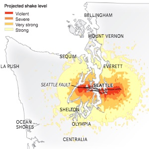
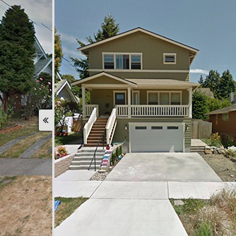
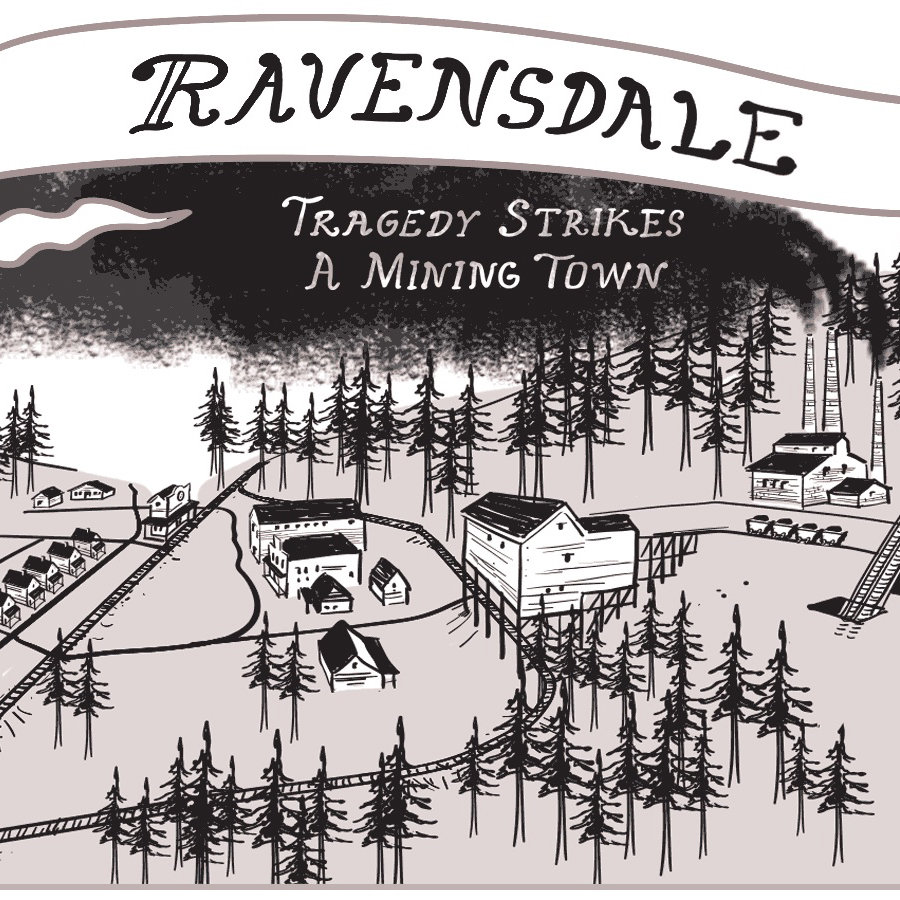
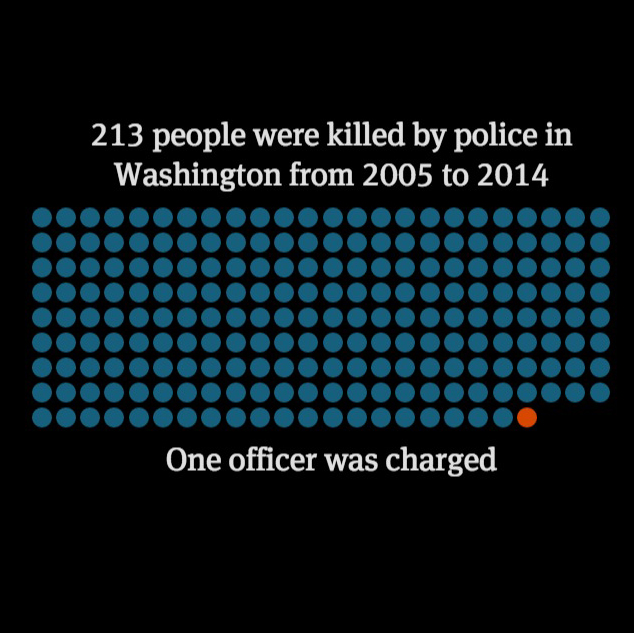
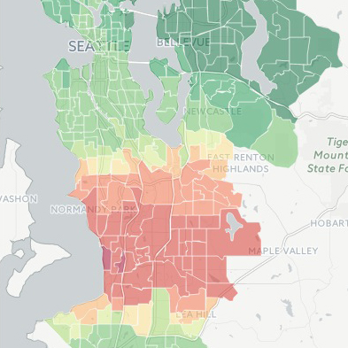
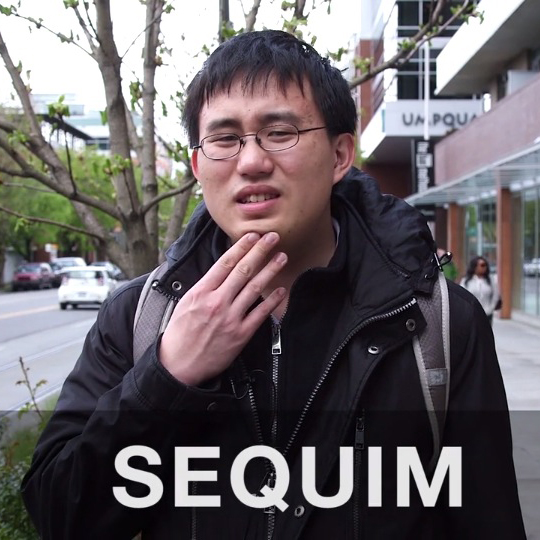
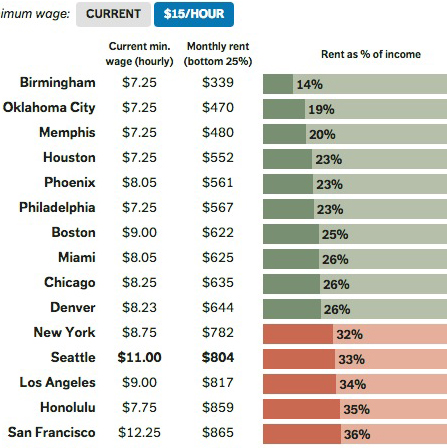
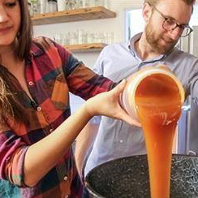
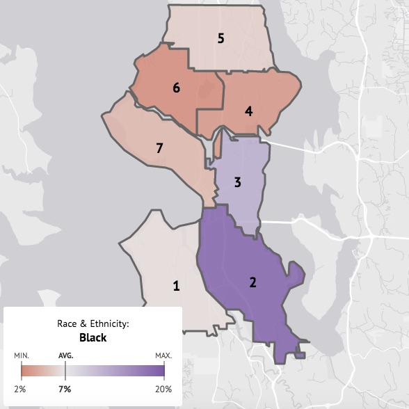
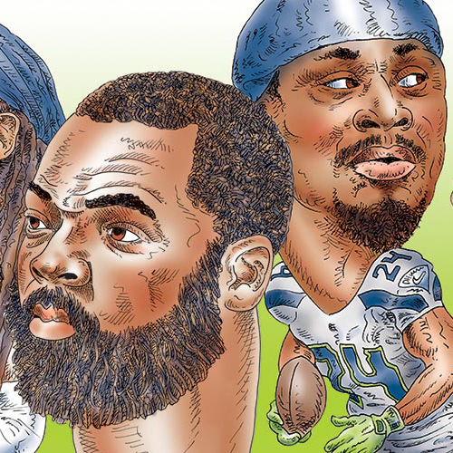